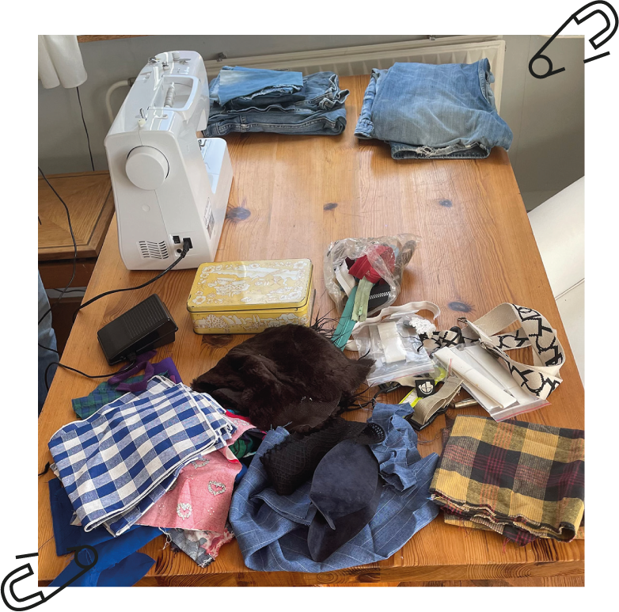
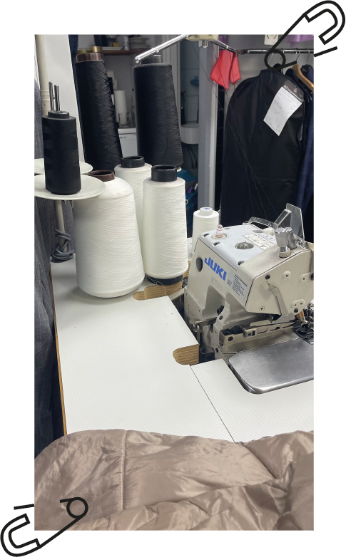

Gereedschap en Materialen

Materialen
Lappen stof, knopen, ritsen, jeans en nog veel meer materialen zijn er om je kleding te repareren!
Hoge kwaliteit naaimachines!
Alle naaimachines zijn van het merk Juki. Dit merk is zeer betrouwbaar en nauwkeurig in haar steken!

Verschillende soorten naaimachines!
Een overlock naaimachine, waar geen losse spoeltjes in hoeft is aanwezig!